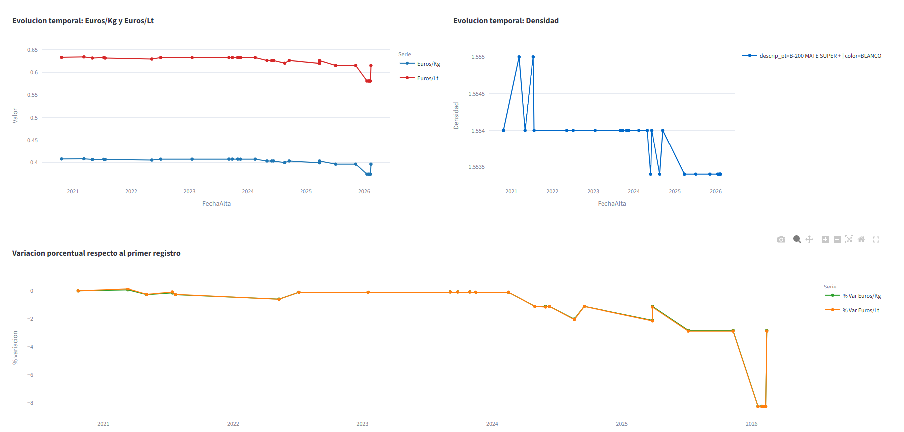

In the industrial environment there is a clear need for a centralised, traceable and operationally robust tool to continuously analyse formulation and production cost evolution. When this information is fragmented across multiple files, without structured version control or agile time-based reading, technical and economic decision-making becomes harder.
The proposal is a Streamlit-based web application that integrates historical cost data into a single environment and allows it to be treated, visualised and analysed dynamically.
The tool makes it possible to monitor cost evolution over time, identify relevant deviations and analyse the impact of modifications in formulation or production conditions.
The value of the tool is not only in data visualisation. It lies in creating a technical base that allows the organisation to move from scattered monitoring to a continuous and useful reading of cost evolution, deviations and their relationship with formula and process changes.

